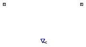

Table of Contents
- User's Guide
- BCs**
- Sensors
- Assemblies**
- Regions**
- Subregions
- Connectors
- Characteristics
- Units
- Quantities
- BaseClasses
- **Please check back soon or contact kdavies4 at gmail.com.
Download
- Latest: FCSys-2.0.zip (**Check back soon.)

| Name | Description |
|---|---|
| Partial sensor for a pair of MechanicalTransport connectors | |
| SensorType | Types of sensors |
type SensorType = enumeration(
Velocity "Shear velocity",
Force "Shear force") "Types of sensors";
 FCSys.Sensors.FaceDifferential.Mechanical.BaseClasses.PartialSensor
FCSys.Sensors.FaceDifferential.Mechanical.BaseClasses.PartialSensor
| Type | Name | Default | Description |
|---|---|---|---|
| SensorType | sensorType | Type of sensor |
| Type | Name | Description |
|---|---|---|
| output RealOutput | y | Measurement |
| MechanicalTransport | negative | Mechanical connector for the negative face |
| MechanicalTransport | positive | Mechanical connector for the positive face |
partial model PartialSensor "Partial sensor for a pair of MechanicalTransport connectors" extends FCSys.Sensors.BaseClasses.PartialSensor; constant SensorType sensorType "Type of sensor"; // Note: This is included so that the type of BC is recorded with the // results.FCSys.Connectors.MechanicalTransport negative "Mechanical connector for the negative face"; FCSys.Connectors.MechanicalTransport positive "Mechanical connector for the positive face"; equation 0 = negative.mPhidot + positive.mPhidot "Conservation of linear momentum (no storage)";end PartialSensor;